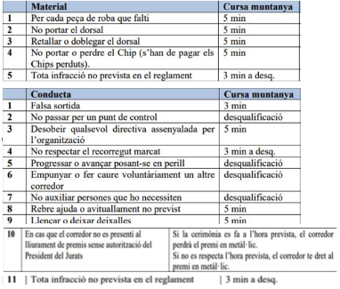

La ROCANOLICH Memorial Marc Pimienta és un esdeveniment que inclou dues curses que
passen per rutes de senderisme de la parròquia de Sant Julià i una caminada inclusiva.
Cada cursa es duu a terme en una sola etapa, al ritme de cada corredor i dins d'un límit de temps,
excepte la caminada popular inclusiva.
• Al voltant de 13 km i uns 1300 metres de desnivell, comença i acaba al Centre de Formació Professional d’Aixovall.El temps de tall per acabar la cursa és de 6h.
• Al voltant de 10 km i uns 640 metres de desnivell, comença i acaba al Centre de Formació Professional d’Aixovall.
• Caminada popular d’uns 4 km i 200 metres de desnivell, amb sortida i arribada al Centre de Formació Professional.
Per participar a la ROCANOLICH és essencial:
• Ser completament conscient de la durada i dificultat de l'esdeveniment i estar adequadament preparat.
• Haver adquirit, abans de la cursa, una comprensió real de l'autonomia personal a la muntanya/terreny que permeti la gestió dels possibles problemes trobats durant aquest tipus d'esdeveniments, en particular:
➡️Capacitat per enfrontar, sense ajuda externa, condicions climàtiques canviants en altitud
(vent, fred, boira, pluja o neu).
➡️Capacitat per manejar, fins i tot quan un està aïllat, problemes físics o mentals derivats
d'una fatiga, problemes digestius, dolors musculars o articulars, petites ferides, etc.
➡️Conscients que el paper de l'organització no és ajudar un corredor a gestionar aquests
problemes.
➡️Conscients que per a una activitat d'aquest tipus a la muntanya, la seguretat depèn de
la capacitat del corredor per adaptar-se als problemes trobats o previstos.
➡️Informar i educar els seguidors del corredor envers el respecte de la natura, les persones
i les regulacions de la cursa.
S'espera que els participants demostrin els principis de semi-autonomia/autosuficiència. Han d'estar preparats per transportar els seus propis líquids, aliments i equip (inclòs l'equip d'inclemències del temps) entre els punts d'avituallament. Els participants també hi han d'estar preparats, dins de les pautes de seguretat del curs, per manejar condicions adverses o canviants. Aquest principi d'autosuficiència implica les regles següents:
1. Al llarg de tota la cursa cada corredor haurà de portar amb si tot l'equipament obligatori.
Aquest equip es portarà en una motxilla i no es pot canviar al llarg de la ruta de la cursa.
2. Els punts d'avituallament proporcionen begudes i aliments. L'organitzador de la cursa només
proporciona aigua sense gas i beguda esportiva / electrolítica per omplir ampolles d'aigua. El
corredor ha de tenir cura d'assegurar-se que té, en sortir de cada lloc d'ajuda, la quantitat
adequada de beguda i menjar per mantenir-los en marxa fins al següent lloc d'ajuda.
3. Està prohibit acompanyar o ser acompanyat al llarg de qualsevol part del recorregut de la cursa
per una persona no inscrita en la cursa. Els corredors no poden participar amb un gos o qualsevol
altre animal, inclosos els animals de servei.
4. Un participant que accepta ser acompanyat fora de les zones designades viola el principi
d'autosuficiència. Els comissaris de cursa, testimonis d'aquesta violació, estan autoritzats a
penalitzar el participant per fer complir les regles.
Per garantir la seva seguretat, cada participant ha de portar tots els elements enumerats en la
llista de material obligatoris i han de portar tot l'equip amb ells durant la durada de la cursa, fins
i tot si el corredor no l'està utilitzant.
Tingui en compte: els articles inclosos en la llista de verificació de material obligatori són les
peces bàsiques de material que cada corredor ha de portar. És important no triar la roba més
lleugera possible. En el seu lloc, els corredors han de tenir en compte que la roba proporcioni
una protecció adequada a les muntanyes / terreny durant tota la prova pensant amb les males
condicions climàtiques, inclòs el fred, el vent, les fortes precipitacions i la neu.
CURSA LLARGA I CURTA
➡️Obligatori:
➯reserva d'aigua (omplint sortint de l'avituallament i de la línia de sortida).
Ampolles d'aigua o bidons de Trail amb capacitat per transportar 1 i 0,50 litres d'aigua.
➯got reutilitzable (per raons de sostenibilitat, no n'hi haurà cap en els
avituallaments).
Cada corredor haurà de portar el seu got.
➯jaqueta impermeable a prova d'aigua. Els ponxos de plàstic per a la pluja, les
jaquetes de vent, les jaquetes resistents a l' aigua NO són adequades.
➯ calçat adequat a la competició. Sabates de trail running resistents a l'aigua i
tancades (excloses les sabatilles minimalistes o ultralleugeres).
➡️Aconsellable:
➯reserva alimentària, recomanació de 800 kcal (2 gels + 2 barres energètiques).
➯protecció tèrmica del cap que cobreix les orelles (tubular autoritzat).
Gorro, passamuntanyes o braga de coll.
➯tallavent de dalt amb mànegues llargues i a la talla del corredor.
➯manta tèrmica de supervivència d'1,40 m x 2 m mínim / 55 polzades x 80 polzades.
➯farmaciola de primers auxilis. Embenatge elàstic auto adherent per a
embenat o llanejat (mínim 100 cm x 6 cm / 40 polzades x 2,5 polzades).
➯si tries prendre bastons/pals, és per la durada de la cursa. Està prohibit
arrencar sense bastons i recuperar-los durant la cursa.
➯telèfon mòbil amb bateria completament carregada (què funcioni a
Andorra) Ha de tenir una targeta SIM que es pugui connectar a la Xarxa Cel·lular
d'Andorra. També asseguri's que el seu telèfon estigui completament carregat i que la
bateria duri tot el seu temps de cursa. Cada corredor ha de guardar els números de
seguretat de l'organització, no emmascarar / bloquejar el seu número.
➯DNI o Passaport, xiulet, protector solar.
Totes les peces de vestir s'han d'ajustar al corredor, de mida, i no s'han d'alterar de cap manera
després de sortir de la fàbrica.
El material obligatori s'ha de portar en una motxilla de Trail durant tota la cursa.
Altres equips recomanats (inclosos, entre d'altres):
• Roba d'abrigar de recanvi, essencial en cas de clima fred i plujós o en cas de lesions;
• Vaselina o crema anti calent;
• Disposa almenys de 20 euros en efectiu (per si de cas...).
• Rellotge GPS.
• Ganivet o tisores per tallar embenatge elàstic.
• Steri-Strep adhesiu d'emergència.
Música: Escoltar música amb auriculars o qualsevol altre dispositiu electrònic no està permès
per raons de seguretat.
CAMINADA POPULAR INCLUSIVA
➡️Obligatori:
➯sabates de trail running/muntanya i roba còmoda d’esport.
➡️Aconsellable:
➯bastons/pals de muntanya.
➯jaqueta impermeable en cas que les condicions meteorològiques ho requereixin.
Els dorsals es lliuren a cada corredor amb una prèvia presentació de:
• Una identificació vàlida amb foto.
El dorsal s'ha de portar al pit o l'estómac en tot moment i ha de romandre completament visible
durant tota la cursa. Sempre s'ha de col·locar damunt de tota la roba i no s'ha de col·locar en
una cama o a la motxilla.
Els logos dels patrocinadors no han de ser alterats o ocultats. El dorsal és l'acreditació per accedir
als avituallaments, punts mèdics, zones de lliurament d'equipatge o recollida. El dorsal només
es retira si el corredor es nega a complir amb les instruccions del director de cursa. Si el corredor
es retira de la cursa, el dorsal es talla i es desactiva.
NOTA: al finalitzar la cursa els corredors obligatòriament han de tornar el xip de seguiment.
Al llarg de les diferents curses, hi ha punts on els corredors reben aliments i begudes.
Els avituallaments subministren begudes i aliments per al seu consum. L'organització subministra
aigua sense gas i beguda esportiva per omplir les ampolles d'aigua obligatòries / bidons
d'hidratació i gots personals. Els corredors s'han d'assegurar, en sortir de l'avituallament, que
disposen de la quantitat necessària d'aliments i begudes per mantenir-los en marxa fins al
següent avituallament.
Per entrar als avituallaments, els corredors hauran de portar el seu dorsal.
Els corredors són revisats a la seva arribada a un punt d'avituallaments i en alguns punts de
seguretat al llarg del recorregut. Tot participant que no passi per aquests punts, serà sancionant
(vegeu PENALITZACIONS).
El marcatge del camí es farà amb cinta blanca i vermella i amb esprai de pintura biodegradable
de color groc. ADVERTÈNCIA: si no pot veure cap marcador de camí, retrocedeixi!
L’estació mèdica està destinada a ajudar qualsevol corredor que necessiti assistència mèdica i
proporcionar les primeres cures.
Els corredors han de donar assistència a qualsevol persona en perill i alertar el centre de control.
Si un corredor no pot trucar al centre de control, i només si es tracta d'una emergència absoluta,
els corredors poden trucar directament a un dels serveis de seguretat nacional (especialment si
està creuant una àrea on només són possibles trucades d'emergència): 112
Una sèrie d'esdeveniments inesperats, inclosos els esdeveniments climàtics inclements, podrien
fer que esperi ajuda més de l'esperat. Per tant, la seva seguretat depèn de la qualitat dels articles
que ha posat a la seva motxilla. Tot el personal designat per la direcció de cursa pot:
Un corredor que és tractat per un metge o contactat pel personal de recerca i rescat se sotmetrà
a l'autoritat del professional i accepta acceptar les seves decisions.
Si l'estat de salut d'un corredor justifica el tractament per degoteig intravenós, el corredor es
retirarà obligatòriament de la cursa.
Els corredors han de romandre en el camí marcat.
Tots els corredors que voluntàriament s'aventuren fora del recorregut marcat ja no estan sota la
responsabilitat de l'organització.
El temps límit per acabar cada cursa és:
(*) Barratge horari al Santuari de Canòlich a les 14:00h.
Els temps de tall es calculen per permetre als participants arribar a la meta dins del límit de
temps.
Els corredors que s'han retirat de la cursa estan sota la seva pròpia responsabilitat i ja no són
recolzats per l'organitzador de la cursa. Es recomana encaridament que qualsevol corredor
retirat sigui transportat de retorn a la línia de meta pel transport de cursa ofert.
Excepte en cas de lesió, un corredor que desitja retirar-se de la cursa ho ha de fer en un punt de
control (avituallament). Hi ha d'informar la persona responsable del punt i informar el centre de
control.
Si un corredor desitja retirar-se mentre està en la ruta entre dos punts de control, ha d'arribar al
punt de control més proper on ha d'informar de la seva retirada. Els corredors que es retirin
hauran de conservar el seu dorsal.
• Els corredors que abandonin en qualsevol altre avituallament o punt de control, però l'estat de
salut dels quals no els obligui a ser evacuats hauran de gestionar l’abandonament pels seus
propis mitjans.
• Pel que fa als avituallaments o punts de seguretat accessibles en cotxe o 4x4:
Després del tancament de l'avituallament/ punts de seguretat, l'organització podria repatriar
qualsevol corredor que hagi abandonat i encara no hagi sortit de l'avituallament.
En cas que les males condicions meteorològiques justifiquin l'aturada parcial o total de la cursa,
l'organització s'assegurarà que tots els corredors siguin transportats al més aviat possible a la
zona de sortida de l’esdeveniment. D’altra banda l’organització és guarda el dret
d’alterar/modificar o cancel·lar el recorregut si les condicions meteorològiques ho justifiquen.
Quan un corredor acabi la cursa, rebrà la medalla finisher. Tots els participants que acabin una
de les curses de la ROCANOLICH tindran accés a un avituallament final.
Els corredors de la ROCANOLICH tindran accés a una zona adaptada per a la realització d’un
massatge relaxant. Per accedir-hi, els corredors han de mostrar el seu dorsal.
També tindran accés a una zona amb dutxes i banys.
Els corredors amb infants tenen la possibilitat d’utilitzar el servei de ludoteca durant la durada
de la cursa.
Per a les dues modalitats de cursa hi ha una classificació general, homes i dones on es realitzarà
l’entrega d’un trofeu i targeta regal.
CURSA LLARGA: categoria absoluta masculina i femenina.
CURSA CURTA: categoria absoluta masculina i femenina.
Per rebre el premi, els atletes han de ser presents en persona a la Ceremònia de Premis. Si l'atleta
no es presenta a aquesta cerimònia, ja no serà elegible per al seu premi. A més, si el corredor no
accepta el premi ofert per l'organització, en CAP CAS EL CONVERTIRÀ EN METÀL·LIC.
A més a més, tots els participants de la ROCANOLICH (cursa llarga, curta i caminada) participaran
a un sorteig on poden optar a diferents premis proporcionats per un dels patrocinadors de
l’esdeveniment.
Penalitats:
Desqualificació amb possible sanció:
Incorre en el següent, suposarà la desqualificació immediata del corredor i podria suposar una
sanció disciplinària:
• Provocar un incident esportiu (agressió o insults greus) a un competidor, o a un membre de
l’organització o del jurat;
• Provocar un accident de forma voluntària;
Les possibles sancions s’hauran de tractar amb els responsables de l’organització.
Qualsevol queixa adreçar-se a info@rocanolich.com
En cas de ser necessari, l'organització es reserva el dret de modificar en qualsevol moment els
recorreguts, horaris d'inici, horaris de tall, la posició dels avituallaments i qualsevol altre aspecte
relacionat amb el bon desenvolupament dels esdeveniments.
En cas de força major, males condicions meteorològiques o qualsevol altra circumstància que
posi en perill la seguretat dels participants, l'organització es reserva el dret a:
• Posposar l'inici de la cursa;
• Modificar els temps de tall;
• Canviar la data d'inici;
• Adaptar el recorregut de la cursa;
• Cancel·lar la cursa *;
• Aturar temporalment la cursa;
• Aturar la cursa en curs.
* Si es cancel·la una cursa o si l'esdeveniment necessita ser modificat (per exemple, una o més
carreres han de ser cancel·lades), per qualsevol motiu fora del control de l'organització, més de
30 dies abans de la sortida, els corredors rebran una comunicació amb diferents opcions per
gestionar la seva inscripció.
En cas de ser necessari, l'organització pot cancel·lar l'esdeveniment. Aquesta decisió no la
prendran només l'organització, sinó que hi ha tot un conjunt d'actors que poden aconsellar i/o
cancel·lar l'esdeveniment.
Tot corredor pot anul·lar la seva participació en l'esdeveniment sempre que hi hagi una causa
major que ho justifiqui (defunció familiar, lesió...).
En ambdós casos, hi haurà un reemborsament de la inscripció.
Responsabilitat civil
L'organització contracta una assegurança a tercers durant la durada de l'esdeveniment. Aquesta
assegurança de responsabilitat civil garanteix les conseqüències econòmiques de la seva
responsabilitat, la de l'STAFF i la dels participants.
Si us plau, llegeix atentament la guia del corredor disponible al nostre lloc web. Si necessites més
informació, posa’t en contacte amb el nostre personal:
info@rocanolich.com
Gaudeix de la cursa!